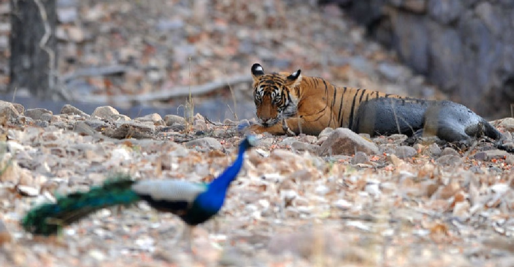
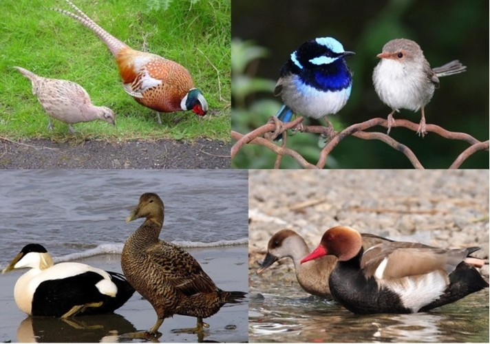
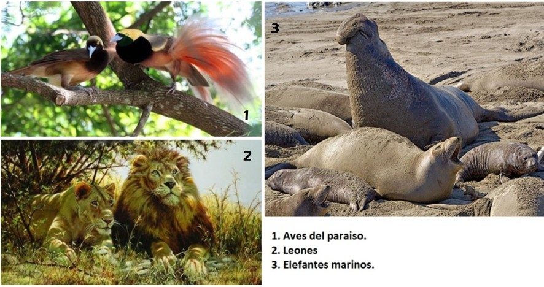
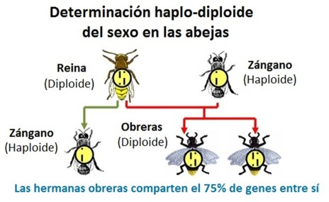

El pesado vuelo del pavo real macho - Unidad 6
El pesado vuelo del pavo real macho
Una tarde caluroso en un bosque de la India se escucha el característico canto del pavo real macho. Fastuosamente el pavo abre su colorida cola y empieza a mecer las plumas que cubren su cola. Allí sus ocelos con un azul iridiscente se mueven dando un grato espectáculo. Una hembra, sin tener el pecho azul, se acerca. Pero en este bosque caducifolio no solo las pavas están pendientes del pavo real macho. De manera repentina salta un tigre y logra atrapar al pavo por la espalda. La hembra alcanza a salir ilesa, mientras el pobre macho será la cena del felino.
El tigre se pudo acercar gracias al camuflaje de su piel y las rayas en este que rompían su silueta entre la hierba alta y las sombras de los árboles. Pudo acercarse sin ser oído por las almohadillas bajo sus patas y sus muelas que parecen un par de tijeras desgarraron la carne del pavo real sin problemas. Todas estas características son adaptaciones y se forjaron gradualmente por el proceso de selección natural. Pero ¿cómo explicar los colores llamativos del pavo real macho?

La cola del pavo real añade peso y puede ser incómoda a la hora de huir de un depredador. Su pecho azul lo hace muy visible a los tigres y su canto anuncia su ubicación. ¿No deberían tener los pavos reales plumajes que los ayudaran a camuflar, como los búhos o los chotacabras? ¿Cómo entonces pudo evolucionar por selección natural este plumaje tan poco favorable para vivir en un bosque con tigres?
Si miramos entre las aves encontraremos otros casos de aves que tienen plumajes muy vistosos. Y en no pocas ocasiones son los machos los más adornados y coloridos.
A Darwin le desconcertó este aspecto, e inicialmente pensó que estos rasgos eran contrarios a la acción de la selección natural. Pero analizándolo más detenidamente encontró que estos rasgos, si contribuyen al éxito reproductivo. Y justamente eso es lo que vale en la naturaleza.
Entre las aves con vistosos y coloridos machos, las hembras eligen al macho más hermoso. Así pues sus genes pasarán a la siguiente generación. La selección está presente, pero quienes seleccionan son las hembras, ya no el clima o los depredadores. Este tipo de selección Darwin la llamó selección sexual.
Habrás notado que esto no ocurre en todas las especies de aves. Hay algunas en las que no hay dimorfismo sexual, es decir que la hembra y el macho se ven iguales. Otras se camuflan muy bien como los chotacabras. No en todas ocurre la selección sexual. La razón para ello está en la ecología de cada especie. La selección sexual también es la responsable de la melena del macho del león, el gran tamaño del elefante marino comparado con las hembras de su especie, y también de las diferencias físicas entre machos y hembras humanos.
En la selección sexual las características evolucionan al conferir una ventaja en la consecución de una pareja. Usualmente estas características denotan salud y vigor. Un ciervo con una gran cornamenta ostenta que pudo aprovisionarse de recursos para hacer una gran cornamenta además de haber podido derrotar a machos rivales. En experimentos en campo se ha observado que las leonas prefieren machos con melenas más espesas y oscuras y que aves, como la viuda de cola larga hembras preferían aparearse con los machos con las colas más largas.
Otro aspecto que le llamó poderosamente la atención al señor Darwin fue la acción de las abejas obreras que son capaces de dar la vida por su colmena. Una abeja obrera al picar deja su aguijón dentro del animal atacado y en el acto desgarra su cuerpo internamente. Este “valeroso” acto de las abejas las lleva a la muerte, pero contribuye a salvar a la colmena. Otro caso, es el de los monos que al ver a un leopardo gritan dando la voz de alarma. El individuo que emite la alarma llama la atención del felino sobre sí. ¿Cómo pudo la selección natural favorecer la evolución de un comportamiento que se ve desfavorable para los individuos?
Para entenderlo debemos recordar que los organismos comparten más genes con sus parientes más cercanos que con otros individuos de su misma especie. Un humano o un mono langur, por ejemplo, comparten el 50% de genes con sus hermanos (de la misma mamá y papá), 25% con sus sobrinos, y 12,5% con sus primos. Recordemos también que en la lucha por el mundo biológico es sumamente importante dejar copias de sus genes a la siguiente generación. Así pues, si el mono langur da un grito de alarma al detectar a un leopardo y en su grupo hay, supongamos, tres hermanos o hermanas, es “buen negocio” ponerse en peligro si en el proceso contribuye a que sus genes, presentes en un 50% en sus hermanos, puedan pasar a la siguiente generación. El biólogo George Haldane bromeó al respecto: “Habría dado mi vida por dos hermanos u ocho primos”.
Las abejas obreras comparten más del 50% con las otras obreras. En ellas los genes compartidos alcanzan el 75%. Esto es así porque las abejas hembra reciben todos los genes paternos y la mitad de los maternos. Esto significa que las abejas obreras comparten entre ellas el 75% genes. Por lo tanto, ayudar a su hermana en la colmena a que se convierta en una abeja reina, ayuda mucho a que sus genes estén representados en la próxima generación.
Estos actos altruistas se han logrado explicar por la “selección por parentesco” y la estrategia evolutiva que deriva de dicha pauta el nombre de “eficacia biológica inclusiva”; que como ya vimos, viene a decir que en la naturaleza es genéticamente más eficiente ayudar a parientes cercanos antes que a parientes lejanos.
Para Darwin fue un rompedero de cabeza explicar la existencia de insectos sociales como las hormigas en las que había castas estériles, pero trabajaban fuertemente por la colonia. Con el posterior descubrimiento de los genes y los cromosomas y de la genética de los insectos sociales se aclaró el panorama.
Hoy en día los biólogos consideran que la selección natural no solo actúa a nivel de gen y del individuo, sino también al nivel de los grupos emparentados, en incluso en niveles más altos.
Enlaces de interés
Selección de grupo y altruismo: el origen del debate http://www.scielo.br/scielo.php?pid=S1678-31662009000300005&script=sci_arttext
Selección sexual: http://www.sesbe.org/sites/sesbe.org/files/recursos-sesbe/Sex_selection.pdf
Bibliografía
Campbell, N (1990). Biology. Second edition, Benjamin/Cummings.
Curtis, H., Barnes, S. (1989). Biology, Fifth edition, Worth Publishers.
Darwin, C. (1859). El origen de las Especies, Madrid, Ediciones EDAF.
Dawkins, R. (2009). Evolución: El mayor espectáculo sobre la Tierra. Espasa Libros
Hickman, C., Roberts, L, y Parson A. (1998). Principios integrales de zoología. Décima edición. Buenos Aires. McGraw-Hill-Interamericana.
Sadava, D. et al (2009). Vida. La ciencia de Biología. Buenos Aires, Argentina, Editorial Médica Panamericana.
Wallace, A.R.(1858). Sobre la tendencia de las variedades para alejarse indefinidamente del tipo original. Recuperado de: http://www.revista.inecc.gob.mx/article/view/131
Créditos de fotografías
Imagen 1: Chris Brunskill - http://www.chrisbrunskill.co.uk/index.php#mi=2&pt=1&pi=10000&s=14&p=1&a=0&at=0
Imagen 3: http://cdn.xl.thumbs.canstockphoto.es/canstock4104280.jpg
Imagen 4: http://www.guysart.com/guy2/Lions/go y https://apologista.wordpress.com/2012/03/16/momentos-de-la-creacion-el-ave-del-paraiso-jardinero/
{kind=link}
Comentarios
Comments powered by Disqus